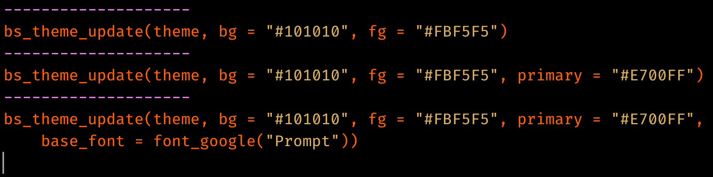

This article provides a general overview of theming techniques available in bslib.
Real-time theming
To get started theming, consider overlaying a real-time theming
widget on your Shiny app (or runtime: shiny R Markdown
document). This is a great way to experiment with different Bootswatch themes, main
colors, fonts, and more. To add the widget, call
bs_themer() in a Shiny runtime content (i.e., within the
server function) and also make sure the app/document uses {bslib} for it’s Bootstrap
dependency.
# Shiny example
ui <- page_sidebar(
title = "My app"
)
server <- function(input, output) {
bs_themer()
}
shinyApp(ui, server)# R Markdown example
---
runtime: shiny
output:
html_document:
theme:
bslib: true
---
```{r}
bslib::bs_themer()
```
If you don’t have a particular app or document in mind, you can also
use bs_theme_preview() to create a demo Shiny app with the
theming widget already overlayed (see here for a hosted
version):

When running the theming widget locally, you’ll see output like this in your R console (in R Markdown, you’ll see YAML output instead of R code) to reproduce the theming changes:

Bootswatch themes
Any Bootswatch theme is
available through bs_theme()’s bootswatch
argument. You may already be familiar with using these “pre-packaged”
themes via the shinythemes package (or via the
theme parameter in R Markdown). Those older approaches only
provide Bootswatch 3 themes, but
with bslib, you can use newer themes like minty or zephyr.
# Shiny example
page_sidebar(
theme = bs_theme(bootswatch = "minty")
)
Main colors & fonts
bs_theme() also provides named arguments for customizing
the main background color (bg), foreground color
(fg), accent colors (primary,
secondary, etc), and fonts (base_font,
heading_font, code_font, etc). Here’s an
example of using a subset of these named arguments to implement a dark
mode with custom fonts:
# Shiny example
page_sidebar(
title = "My app",
bs_theme(
bg = "#101010",
fg = "#FFF",
primary = "#E69F00",
secondary = "#0072B2",
success = "#009E73",
base_font = font_google("Inter"),
code_font = font_google("JetBrains Mono")
),
...
)
Among all the coloring options in bs_theme(),
bg, fg, and primary are by far
the most influential as they effect nearly every color on the page. In
fact, bg and fg alone impact 100s of defaults
— everything from text color, card()s,
accordion()s, and much more. The accent colors don’t impact
nearly as much, but primary does control the color for some
important things like hyperlinks, navset_pill() links,
accent/focus colors for inputs, and more. That being said, other accent
colors can be handy for customizing things like
shiny::actionButton() (defaults to the
secondary color), shiny::showNotification() ,
or more generally any HTML content that leverages Color Utility
Classes.
Choosing colors
When choosing bg and fg colors, keep in
mind that it’s generally a good idea to pick colors with a similar hue
but a large difference in their luminance.
bs_theme() also provides 3 named arguments for main
fonts: base_font, heading_font, and
code_font. When using web safe
font combinations, it’s ok to provide a character string of
(comma-separated) font families to these arguments (e.g.,
bs_theme(base_font = '"Times New Roman", Times, serif').
Otherwise, use one of the font_google(),
font_link(), and/or font_face() helpers to
include the relevant file(s) so the client’s browser may render the
font(s). font_link() and font_face() are
fairly low-level interfaces to the
CSS web font API, but font_google() has the additional
ability to download and cache font file(s), making it so that an
internet connection is needed only for the first time a particular font
is used.
Choosing fonts
When choosing fonts, keep in mind that it’s generally good practice
to put serif fonts in base_font, sans-serif fonts in
heading_font, and monospace fonts in
code_font. If you aren’t sure where to start, fontpair.co has a nice gallery of
Google Font pairings.
Theming variables
bs_theme() also provides access to 100s of more specific
theming options by considering anything
passed through it’s ... argument to be a new Bootstrap
Sass variable defaults. This allows you to get more targetted with
your theming; for example, let’s set the $progress-bar-bg
Sass variable to 'orange' (a CSS color).
# Shiny example
bs_theme(
bg = "#002B36", fg = "#EEE8D5",
"progress-bar-bg" = "orange"
)
In addition to CSS values (e.g., "orange"), a variable
can be any valid Sass
expression, which is quite useful for leveraging Sass’ built-in
module’s (e.g., mix()
for mixing colors)
bs_theme("progress-bar-bg" = "mix(white, orange, 20%)")
#> $progress-bar-bg: mix(white, orange, 20%) !default;
#> @import "scss/_variables.scss";Underneath the hood, bs_theme() works by placing Sass
variable defaults before Bootstrap’s variable defaults.
That’s why something like bs_theme(primary = "red") “just
works” in the sense that it not only provides $primary with
a new default value, but it also passes the value to other variables
that default to $primary (e.g. $progress-bar-bg).
# Reduced version of the Sass code behind `bs_theme(primary = "red")`
sass::sass("
$primary: red !default; // First one wins
$primary: blue !default;
$progress-bar-bg: $primary !default;
@debug $primary, $progress-bar-bg;
")
#> red, redSince bs_theme() defines variables before
Bootstrap, we must define variables differently if they want to
reference Bootstrap’s Sass code. For example, what if we wanted
$progress-bar-bg to default to $secondary
instead of $primary?
bs_theme("progress-bar-bg" = "$secondary") |>
sass::sass()
#> Error: Undefined variable: "$secondary".Thankfully bs_add_variables() provides a workaround. By
default, bs_add_variables() works just like
bs_theme() (it puts variable definitions before other Sass
code), but by with .where = "declarations", we can place
the definition after Bootstrap:
bs_theme() |>
bs_add_variables(
"progress-bar-bg" = "$secondary",
.where = "declarations"
)
#> @import "scss/_variables.scss";
#> $progress-bar-bg: $secondary;There’s currently no easy way to define variables this way in R
Markdown (other than using !expr to pass a
bs_theme() object directly into theme)
Adding rules
A good amount of theming is possible by customizing Bootstrap Sass
variables in bs_theme(), but sometimes you may also want to
add additional Sass/CSS rules. The bs_add_rules() function
makes this easy for Shiny usage and generally accepts any valid Sass/CSS
(see sass::as_sass()). For example, here’s how one could
add local SCSS/CSS files and/or Sass/CSS code in a string (the CSS file
in this case was taken from nes.css)
bs_theme(
bg = "#e5e5e5", fg = "#0d0c0c", primary = "#dd2020",
base_font = font_google("Press Start 2P"),
code_font = font_google("Press Start 2P"),
"font-size-base" = "0.75rem", "enable-rounded" = FALSE
) %>%
bs_add_rules(
list(
sass::sass_file("nes.min.css"),
sass::sass_file("custom.scss"),
"body { background-color: $body-bg; }"
)
)
In the R Markdown case, it’s recommended that additional CSS (or
Sass) rules come through the css parameter, but you may
also use the bslib engine. As with
bs_add_rules(), these rules can reference Bootstrap Sass
variables as well as utilize convenient Sass mixins or functions like color-contrast(),
mix(),
etc.
---
output:
html_document:
theme:
bslib: true
css: my-rules.scss
---
```{bslib}
$custom-bg: rgba($primary, 0.3);
.custom {
background-color: $custom-bg;
color: color-contrast(opaque($body-bg, $custom-bg))
}
```
::: {.custom}
Hello custom block with custom styles!
:::
Utility Classes
Utility classes are primarily helpful for styling at the component (rather than the page) level, and is particularly handy for things like spacing, border, colors, and more. See the article on Utility Classes for some useful examples specific to Shiny and R Markdown.
Component support
Below is a list of known-to-be themeable HTML components that “just work” well with custom real-time themes:
-
All of “core” Shiny UI (e.g.,
sliderInput(),selectInput(), etc.)- The one exception is
plotOutput(), but in that case, the{thematic}package can be used to essentially translate CSS to R plot theming defaults. Just putthematic_shiny()in your Shiny apps andthematic_rmd()in your R Markdown documents.
- The one exception is
All of
rmarkdown::html_document()specific features as well as{flexdashboard}.Any un-styled HTML content (e.g.,
tags$input(type = "checkbox")).Some htmlwidgets like DT and plotly (only
ggplotly()is supported through thematic right now)
Over time, we’re hoping this list grows as package authors and
developers embrace bslib’s tools for making themeable custom components.
Dynamic theming
The functionality behind real-time theming
can be leveraged in any Shiny app (or runtime:shiny Rmd
doc) to implement your own custom theming widget (via
session$setCurrentTheme()), like a dark mode switch:
light <- bs_theme()
dark <- bs_theme(bg = "black", fg = "white", primary = "purple")
ui <- fluidPage(
theme = light,
checkboxInput("dark_mode", "Dark mode")
)
server <- function(input, output, session) {
observe(session$setCurrentTheme(
if (isTRUE(input$dark_mode)) dark else light
))
}
shinyApp(ui, server)
See the sections on setCurrentTheme and
getCurrentTheme here
to learn more.